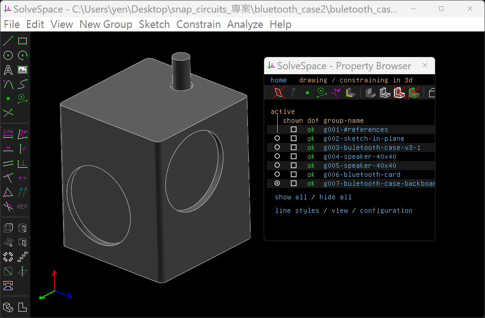
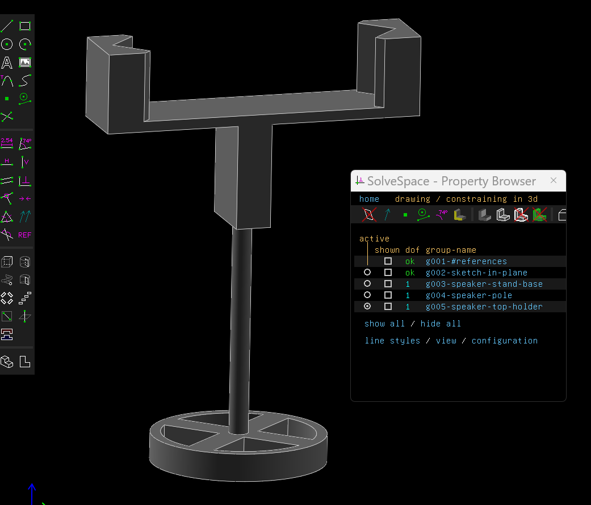

音瀚 40mm 4 歐姆全音域小喇叭單體兩個
藍芽擴音卡一片 (XH-A158（PAM8403 晶片）藍牙 5.0 雙聲道 5W 功放板)
USB 充電裸線一條
bluetooth_case2.7z (in Solvespace)
speaker_stand.7z (in Solvespace)


台灣喇叭製造商 40mm／1.5 吋級
音瀚（IN HANN）是台灣的喇叭單體製造商，產品涵蓋微型喇叭、全音域單體、音箱及音響相關產品。
40mm 全音域小喇叭，市面上可以找到 40mm、4Ω、5W 的正方形全音域單體。不過，音瀚的 40mm 系列並非只有一種規格，官方型錄也列有 40RR、40R-TA、40SR、40SR-1 等不同型號。
以下為 40mm、4Ω、5W 正方形全音域喇叭系列。
| 項目 | 40mm 4Ω／5W 商品標示 | 官方 40RR 規格 |
|---|---|---|
| 單體尺寸 | 40mm | 40mm |
| 額定阻抗 | 4Ω | 8Ω ±1.2Ω |
| 額定功率 | 5W | 3W |
| 最大功率 | 未確認 | 5W |
| 共振頻率 Fo | 未公布 | 150 ±30Hz |
| 音壓靈敏度 | 未公布 | 87 ±2dB |
| 頻率響應 | 未公布 | Fo～20kHz（-10dB） |
| 重量 | 未公布 | 32.7g |
同樣是 40mm，聲音取向和承受功率有明顯差異。
| 型號 | 阻抗 | 額定功率 | 最大功率 | 共振頻率 | 音壓 |
|---|---|---|---|---|---|
| 40RR | 8Ω | 3W | 5W | 150Hz | 87dB |
| 40R-TA | 8Ω | 0.5W | 未列 | 280Hz | 79dB |
| 40SR-1 | 8Ω | 3W | 5W | 150Hz | 86dB |
| 40SR | 8Ω | 7W | 8W | 230Hz | 87dB |
| 4040S-AS | 4Ω | 4W | 未列 | 150Hz | 86dB |
其中包括：
40mm 全音域單體的主要優勢在於體積小、單體數量少，而且能以一個振膜重播大部分可聽頻段。
一般適合呈現：
單體不需要額外分音器來分配高音與中音，因此在適當的箱體和安裝條件下，可以減少多單體之間的相位與銜接問題。
但要注意，全音域不代表所有頻率都能以相同音量、相同失真表現重播。
40mm 單體最大的物理限制就是振膜面積。
以40RR為例：
實際低頻表現還會受到以下因素影響：
因此，40mm 單體較適合以中頻、人聲清晰度及小型化為主要設計目標。
40RR 官方標示的有效頻率響應為 Fo～20kHz，最大偏差 -10dB。
此為規格書上的頻率響應範圍，不代表20kHz仍然有平坦的輸出。
實際高頻表現還需要觀察頻率響應曲線，特別是：
對小型全音域單體而言，這些因素會直接影響聲音是否明亮、刺耳或有細節。
這是實際使用時非常重要的部分。
以官方40RR為例：
建議搭配方式：
| 擴大機輸出 | 使用建議 |
|---|---|
| 1～2W／8Ω | 適合一般近場聆聽 |
| 3W／8Ω | 接近額定功率 |
| 5W／8Ω | 已達標示最大功率，不宜長時間滿載 |
| 10W以上／8Ω | 必須控制音量，避免過載 |
若使用4Ω版本，必須另外確認擴大機能否穩定驅動4Ω負載。
特別提醒：喇叭單體的功率標示不是建議長期使用的音量，而是承受電功率的規格。低頻過度增益、長時間削波及過大的振膜位移，都可能損壞小型單體。
迷你 DIY 音箱
桌上型、近場聆聽、小型音響。
DIY Speaker Kits
藍牙小音箱
便攜式音響、藍牙喇叭。
智慧家庭設備
語音提示、智慧控制設備。
電子音響設備
收音機、語音播放及多媒體設備。
音瀚 40mm 4Ω 5W 正方形全音域喇叭單體
這個版本值得注意的是4Ω阻抗及5W功率標示，與官方40RR的8Ω、3W額定功率不同。購買前最好確認實際型號及背面標籤。
如果從 DIY 音響設計的角度來看，音瀚40mm全音域單體有以下優缺點：
| 評估項目 | 評價 |
|---|---|
| 體積 | 優秀 |
| 中頻應用 | 適合 |
| 人聲播放 | 適合 |
| 低頻延伸 | 有限 |
| 高頻延伸 | 需確認實測曲線 |
| 大音量播放 | 受功率及振膜衝程限制 |
| DIY 開發 | 值得嘗試 |
40mm單體最值得發揮的方向，是小型、高效率、以人聲為主的音響系統，而不是追求強勁的低音或大型音場。
目前官方公開的40RR資料並未完整列出以下數據：
| 參數 | 用途 |
|---|---|
| Fs | 單體自由空氣共振頻率 |
| Qts | 判斷適合密閉或反射式箱體 |
| Qes | 電氣阻尼特性 |
| Qms | 機械阻尼特性 |
| Vas | 等效空氣容積 |
| Sd | 有效振膜面積 |
| Xmax | 最大線性振膜衝程 |
| Re | 直流電阻 |
| Le | 音圈電感 |
| BL | 磁力驅動因數 |
這些參數對設計音箱非常重要，尤其是 Qts、Vas、Fs、Sd 和 Xmax，可以用來評估低頻延伸、箱體容積與最大聲壓能力。
研究方向？
音瀚 40mm 單體（型號 4040S-AS）為 4Ω / 5W，搭配兩個單體時，最適合選用雙聲道（立體聲）5W+5W、支援 4Ω 負載且 DC 5V 供電的藍牙功放板。
推薦搭配的 5W 雙聲道藍牙功放板
XH-A158（PAM8403 晶片）藍牙 5.0 雙聲道 5W 功放板
接線與供電注意事項（避免燒毀與破音）
設計結合「兩顆音瀚 40mm 全音域單體」與「5W+5W 藍牙擴音卡」的外殼時，最推薦採用「左右獨立密閉音腔 ＋ 後方獨立電路倉」的三隔間箱體結構，材質首選 6mm～9mm 密集板（MDF）或實木板（若用 3D 列印，壁厚建議至少 3mm 並加強內部肋條）。 這樣的設計能同時解決聲學串音、箱體共振、藍牙訊號遮蔽與散熱問題。
一、 聲學與結構分區（核心設計）
40mm 全音域單體的共振頻率（fo）約 150Hz，小單體如果沒有適當的密閉腔體，低頻會直接抵消、聲音單薄；如果左右單體共用同一個空間，則會互相干擾。
• 左右聲道獨立氣密音腔（Front Left / Right Chambers）：
• 箱體內部用隔板將左、右兩顆喇叭徹底隔開。 • 單顆建議內淨容積：約 0.25 ～ 0.4 公升（250cc ～ 400cc）（例如單邊內部尺寸約 7cm × 7cm × 7cm），能讓 40mm 單體發揮最飽滿的中低頻，不至於過度壓抑振膜或失去控制力。
• 氣密處理：喇叭單體與面板之間加一圈 1mm～2mm EVA 泡棉墊片，板材接縫處用白膠或熱熔膠封死，避免漏氣產生風切雜音。
• 吸音棉：在每個音腔內塞入少量蓬鬆的聚酯纖維吸音棉（約佔容積的 30%～50%，不要壓實），可減少箱內駐波、讓中音更乾淨。
• 獨立電路倉（Rear Electronics Compartment）：
• 將擴音卡、電池與開關放在後方或下方的獨立隔間，與喇叭音腔完全隔離。
• 好處：避免音腔內氣壓震動導致接線鬆脫或產生電容微音雜訊，也方便日後拆背板維修。
二、 外觀尺寸與開孔規劃建議
以桌面型一體式立體聲藍牙喇叭為例，整體外觀尺寸建議落在 寬 18cm × 高 8.5cm × 深 9cm 左右（視覺比例協調且便於擺放）：
前障板（Front Baffle）開孔：
• 單體開孔：音瀚 4040S-AS 為 40mm 正方形外框，開孔直徑約 36mm～38mm（依實際單體盆架內徑微調，預留 0.5mm 公差），四個角落對應螺絲孔鎖緊。
• 倒角處理：若板材較厚（如 9mm），建議在開孔內側做 45 度倒角或擴孔，避免深孔道形成「筒音」遮擋中高頻擴散。
• 微仰角設計：前障板或箱體底部可設計 5°～10° 微仰角，讓聲音直接指向坐姿時的耳朵高度，近場聆聽的結像感會好很多。
背板（Rear Panel）開孔：
• 電源充電孔：對應擴音卡的 Micro USB 或 Type-C 孔位精準開孔，若卡板位置較深，建議改用面板安裝式延長線拉到背板，插拔更耐用。
• 實體電源開關：強烈建議在電池／電源正極串接一個船型開關或撥動開關鎖在背板，不使用時可徹底斷電（解決部分擴音卡待機微耗電問題）。
• 指示燈導光：在擴音卡的藍牙狀態 LED 正後方鑽一個 2mm～3mm 小孔，塞入一小段透明壓克力棒或熱熔膠柱作為導光柱，不需看背板也能確認連線狀態。
三、 內部佈線與抗干擾細節
• PCB 藍牙天線避開遮蔽：擴音卡上的蛇形走線（天線端）絕對不要緊貼喇叭背後的磁鐵，也不要放在金屬電池（如 18650）正後方；天線端應朝向木質或塑膠外殼邊緣，並保持至少 2cm 以上距離。
• 穿線孔密封：喇叭線從「電路倉」穿入「左右音腔」時，穿線孔務必用熱熔膠或矽利康封死，維持音腔氣密。
• 電池固定：若內建 18650 鋰電池，建議使用專用電池盒或用雙面泡棉膠＋束線帶固定在底板，避免重低音震動時電池撞擊外殼發出異音。
• 底部減震腳墊：箱體底部四角貼上 矽膠止滑墊（高度 2mm～3mm），可防止低頻震動傳導到桌面產生嗡嗡共振聲。 如果你想進一步微調設計圖或機構細節，可以告訴我：
• 預計使用的外殼材料與製作方式（雷射切割木板、3D 列印、手工鋸木或現成盒改造）
• 外型偏好（桌面一體式長條音箱、還是左右分離式小對箱）
• 是否需要加入被動輻射器（低音震膜） 來強化 40mm 單體的低頻下潛
將兩個 40mm 單體裝在立方體（Cube）的兩個相鄰側面，並讓立方體的「稜線（轉角）」正對自己（兩顆喇叭各向左右偏轉 45°），這種幾何結構在聲學上屬於「雙向擴散／偶極反射（Bipolar / Angled Dispersion）」配置。
這個造型非常適合桌面近場擺放，因為能創造出比一般平面小音箱更寬廣的音場；但因為兩顆單體夾角達 90° 且3D 列印塑膠殼較輕薄，需要針對相位干擾、箱體共振、低頻量感與擺位反射做以下四項關鍵優化，才能達到最佳音響效果：
一、 聲學核心：利用「90° 夾角」創造寬廣音場，同時避免梳狀濾波
當立方體的稜線朝向你（兩面各 45° 向外發聲）時，聲音會往左前方與右前方擴散：
單體盡量靠近「正中央的稜線」安裝：
• 在兩個相鄰的面上，不要把喇叭開孔放在面的正中心，而是稍微往兩面交界的「前稜線」靠攏（邊緣距離稜線約 8mm～12mm 即可）。
• 聲學原因：縮短兩顆單體振膜之間的物理距離，能減少高頻聲波在正前方交會時的時間差與相位抵消（梳狀濾波效應），讓人聲（中頻結像）穩穩凝聚在稜線正前方，不會覺得聲音散開或空洞。
擺位距離牆面 15cm～25cm：
• 由於兩顆單體朝左右 45° 斜後方反射，桌面後方或側邊若有牆面，聲波經牆面反射後會形成自然的環繞包圍感；但若貼牆太近（< 5cm）會導致低頻混濁，建議距離後牆約 15cm～25cm 效果最佳。
加入 5°～8° 仰角底座： • Cube 放在桌面上高度較低，建議在列印件底部一體成型設計一個 5°～8° 的微仰角底座（讓朝向你的那條底邊稍微墊高），使 45° 斜向發聲的軸線直接對準耳朵高度，高頻細節會清晰很多。
二、 3D 列印箱體結構：克服「塑膠殼共振與單薄感」
3D 列印件（PLA / PETG）的密度與內阻尼遠低於木頭，若直接列印薄殼，開大聲時外殼會跟著震動發出「塑膠共鳴聲」。建議在建模與切片時做以下處理：
壁厚與內部補強肋（Ribs）：
• 外壁厚度：建議設定為 3.5mm ～ 4.5mm（或 4～5 層外牆 Perimeters ＋ 30%～40% 螺旋體 Gyroid 填充），能有效壓制中頻箱體共振。
• 交叉加強肋：在兩個喇叭背後的音腔內壁，印出高度約 3mm～4mm 的十字形加強肋條，大幅提升平面抗形變能力。
推薦使用「單一被動輻射器（低音震膜）」補齊低頻：
• 音瀚 40mm 單體的共振頻率為 150Hz，在小型立方體內若純做密閉箱，低頻下潛有限。
• 建議在立方體的其中一個背面或頂面，加裝一片 40mm～50mm 的被動輻射器（Passive Radiator，無磁鐵的橡膠震膜），與兩顆單體共用一個經過計算的獨立音腔（約 350cc～450cc）。這樣不需開倒相孔（避免小箱體風切聲），就能讓低頻下潛延伸至 80Hz～90Hz 左右，聽感會渾厚非常多。
• 註：若不加被動輻射器，則維持「左右各自獨立密閉音腔（各約 200cc～250cc）」最保險，低頻較緊實不鬆散。
材質選擇建議：
• PETG 或 霧面 PLA（Matte PLA） 優於一般亮面 PLA：PETG 韌性較好、內阻尼稍高，較不容易產生高頻脆響；若使用木質纖維 PLA（Wood PLA）並把壁厚印到 4mm，聲學阻尼表現會更接近密集板。
三、 立方體內部空間配置（建議尺寸：10cm × 10cm × 10cm）
以 100mm × 100mm × 100mm 的立方體為例，扣除 4mm 壁厚後內部淨空間約為 92mm × 92mm × 92mm（約 778cc），非常適合做「前上聲學區 ＋ 後下電路倉」的斜向隔板分艙：
• 前側 V 型音腔（兩顆單體所在區域）：
• 兩顆 40mm 單體分別裝在「左前面」與「右前面」，單體背後的磁鐵在立方體內部會呈現 90° 交錯，設計時務必確認兩顆磁鐵後方在中心交會處不會互相碰撞（10cm 立方體空間足夠錯開）。
• 音腔內部貼一層 2mm 自黏式吸音棉或汽車隔音止震墊（丁基橡膠），能瞬間消除 3D 列印塑膠壁的空洞回音，這對 3D 列印音箱的音質提升最明顯。
• 後下三角電路倉（兩背面交界處）：
• 利用一塊斜向隔板（或列印一體成型的隔離艙壁），將「左背面」與「右背面」交界的後方角落隔出一個獨立三角形空間，用來放 5W 藍牙擴音卡、18650 電池、開關與充電孔。 • 藍牙天線位置：把擴音卡的 PCB 藍牙天線貼近「後背板」內側，遠離前方兩顆喇叭的磁鐵，訊號完全不會被遮擋。
四、 組裝氣密與減震細節
列印件接縫氣密：立方體建議拆成「主箱體」＋「後方維修底蓋／背蓋」兩件式列印。蓋子接合處設計 凹凸止口（榫槽），組裝時在溝槽內塗一圈 矽利康（Silicone） 或夾入 1.5mm TPU 軟料列印墊圈，確保音腔完全不漏氣。
螺絲固定優先於膠黏：開孔處預留 M3 熱熔螺母（Heat-set Inserts） 孔位，用螺絲把單體與背蓋鎖緊，並在單體邊框貼一圈 EVA 泡棉膠帶，既氣密又方便日後拆裝調音。
TPU 軟料減震腳墊：若有多色／多材質列印機，或另印四顆 TPU 95A 軟料腳墊 黏在底部四角，可徹底阻絕立方體把震動傳導到桌面上。 如果你想進一步精算結構尺寸，可以告訴我：
• 預期的立方體邊長大小（例如 8cm、10cm 或 12cm）
Copyright © All rights reserved | by Colorlib